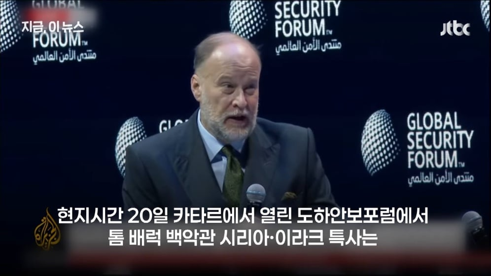
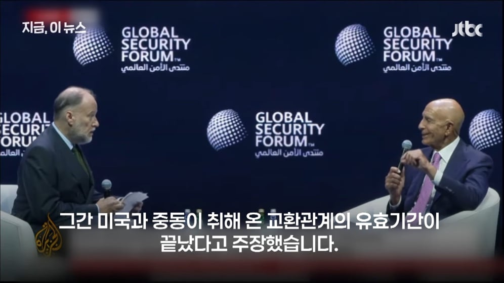
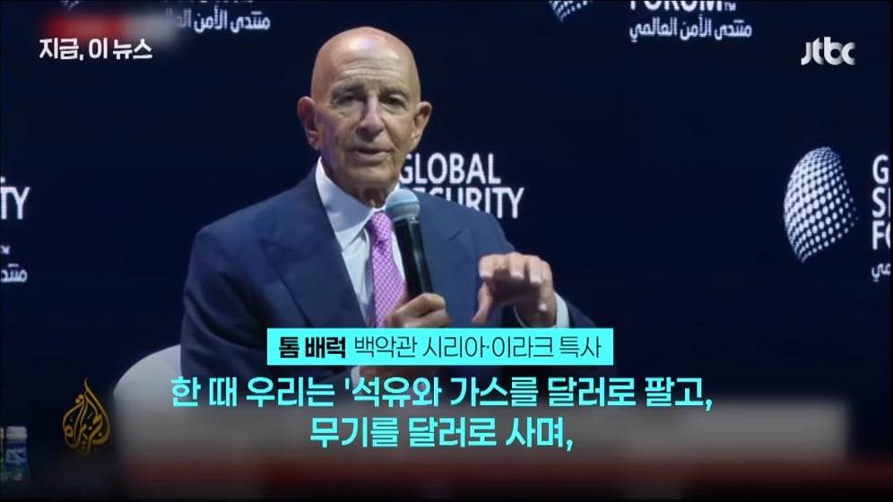
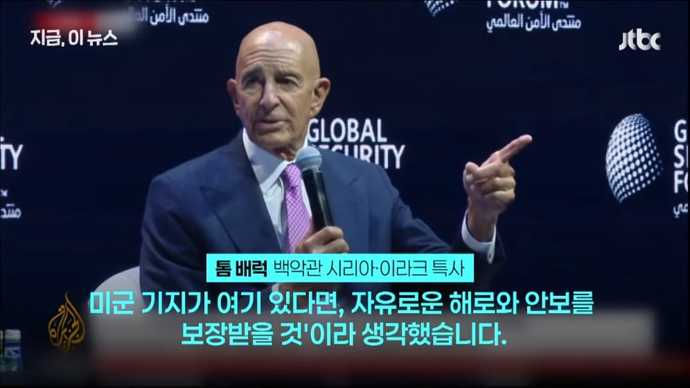
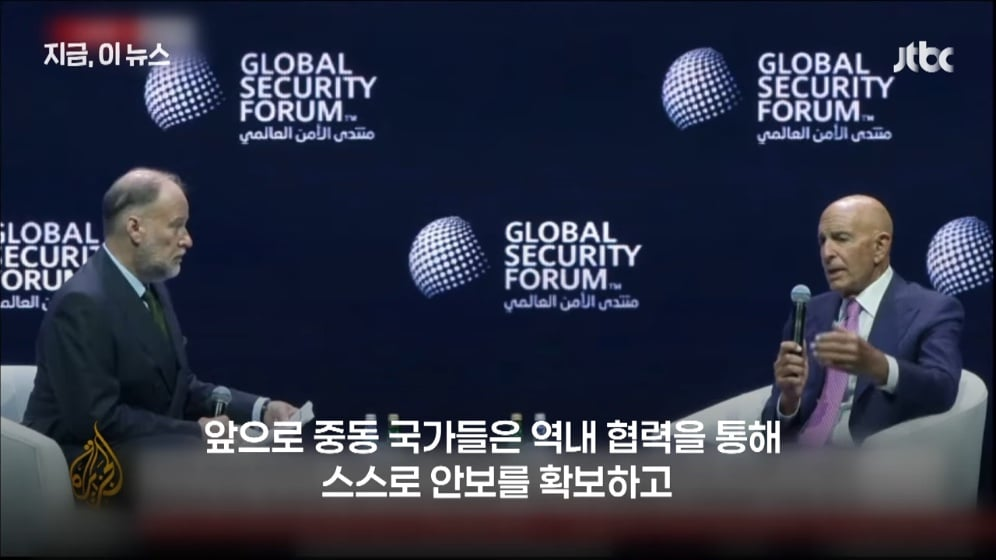
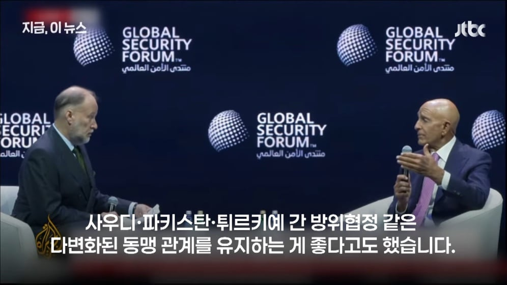
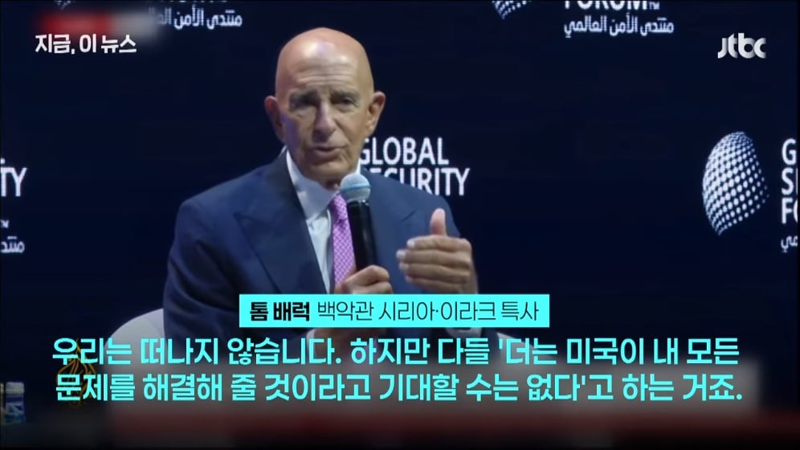
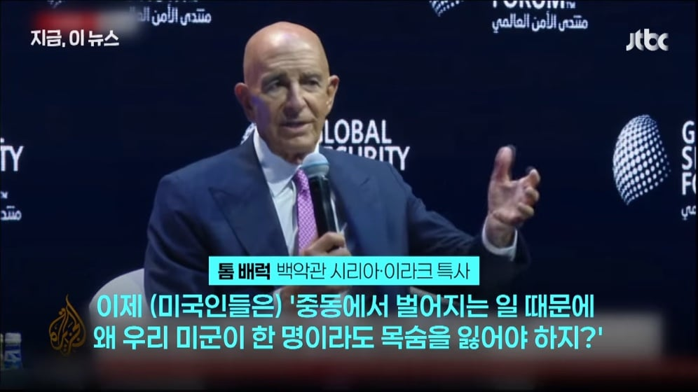
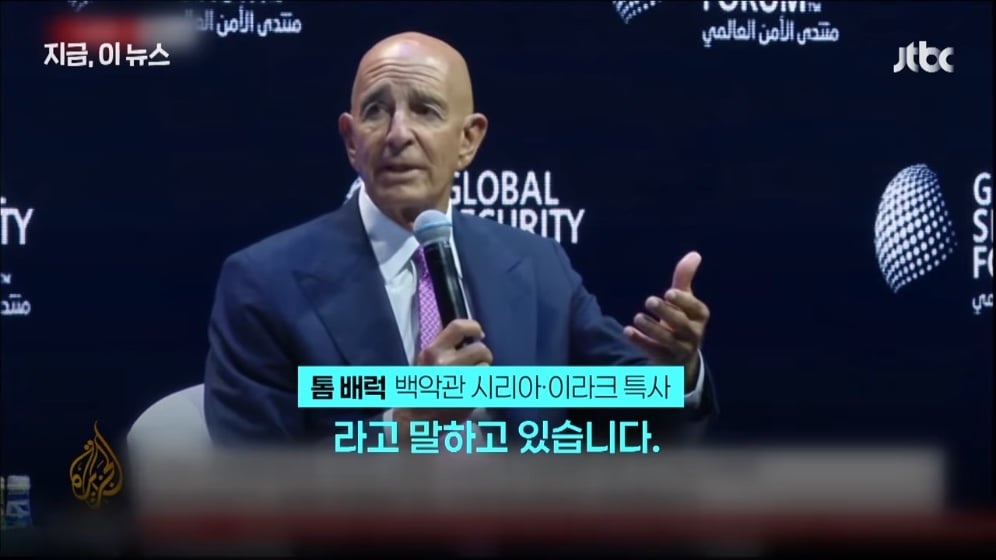
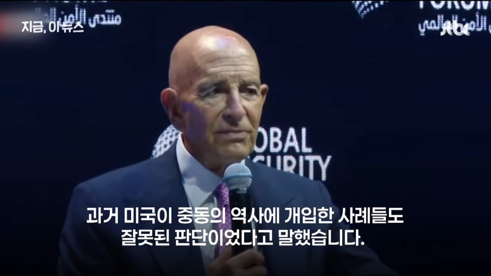
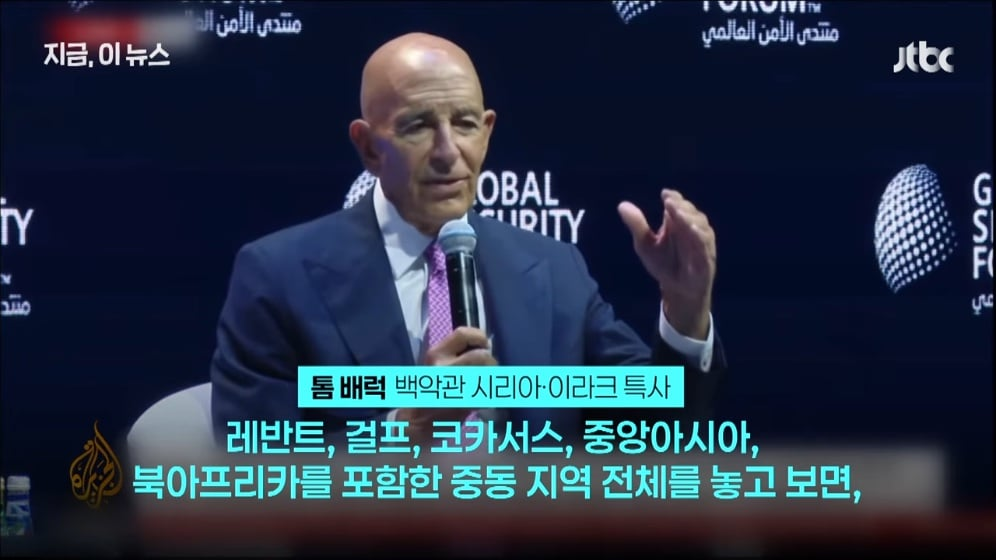
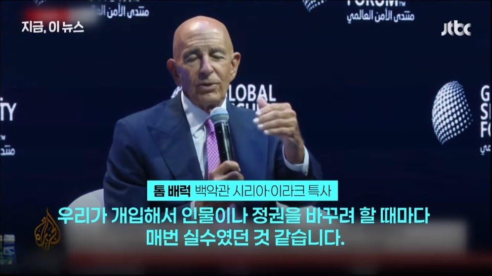
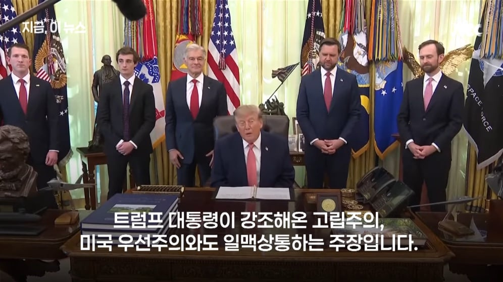
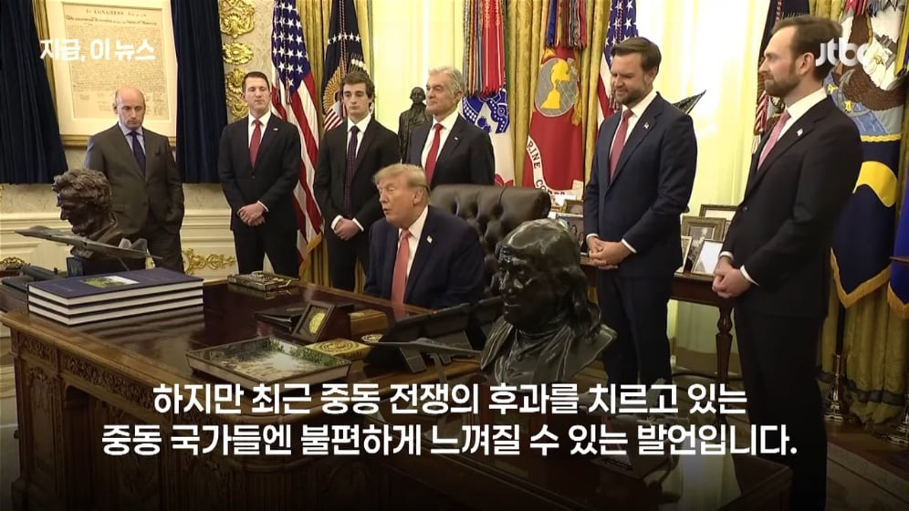
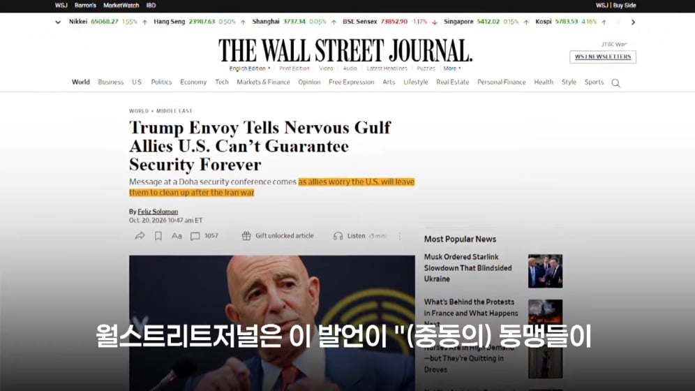
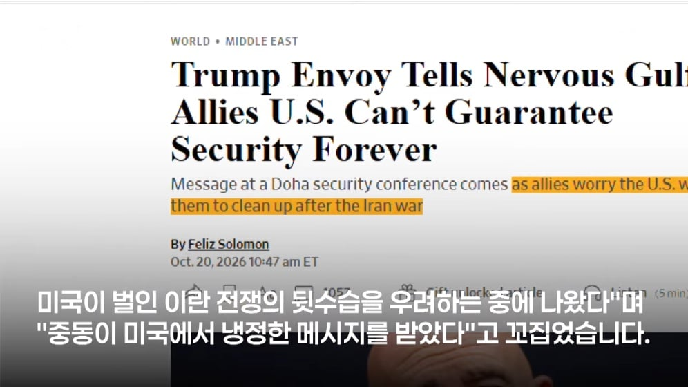
















싸튀충 새끼들 ㅋㅋㅋㅋㅋ
전세계 핵개발 프로젝트on
달러가치를 유지해주는 페트로달러제 붕괴하나요
똥싸튀
1. 미국이 중동 우호국들 안 지켜주면
2. 그러면 바로 옆에 핵 가진 이스라엘이 있는데 중동 나라들은 어떻게 나라 지킴? 이스라엘이 팔레스타인에 지금 하는 짓들만 봐도
3. 핵개발은 필연적임. 애초에 핵 기술이 그렇게까지 어려운 기술이 아님. 몇십 년 전에 나온 기술이고 진짜 이 악물고 마음먹으면 충분히 가능함. 그러니 파키스탄, 북한 같은 저개발국도 갖고 있는 거고
4. 그럼 지금까지 미국의 중동 우호국이었던 나라들이 하나씩 핵개발을 해. 그럼 그 옆 나라들은 가만히 있을까?
이게 이란 전쟁 후폭풍 감당 못하니 그냥 임시방편으로 헛소리 하는 거여야만 함. 그렇지 않으면 이제 세계는 핵 도미노의 지옥 수렁 속으로 빠져들어가는 거임
진짜 도람프 빨리 탄핵이라도 안하면 답이 없을듯.
이렇게 되면 미국의 세계 패권은 끝남. 몇 나라들만 핵 있어서 지금까지 국제 분쟁들이 많이 억제된 건데
당연히 이렇게 흘러가면 우리나라도 무조건 핵 있어야 하고
한국 : 5..
그럼 앞으로 페트로 위안 등장하나요?
그럼 페트로달러 어떻게 유지하려고?
진짜 오로지 그것땜에 하는거였잖아
하나의 중국 어캐막을라고 깝치노
영프 조지고 패권주의 세웠으면 끝까지 책임을 져 시발